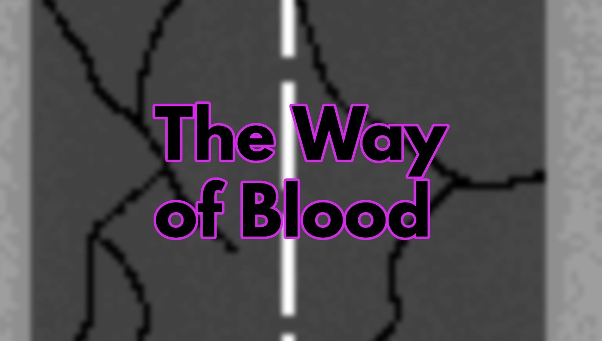

Here are the following projects from my academic studies, TAShip and personal.
The COMP3005 Autograder was a tool for student submissions of Project v1 of the Carleton University COMP3005 Winter 2024 Class. It was an automated system that would parse through each student's github repository submission, read their database dump file to fabricate a new database, and records the query metrics to determine correctness and efficiency - created on a Linux environment. The autograder itself is currently private to withold Academic Integrity, but the submission script template and further information for students can be found on the image's hyperlink.

The Way of Blood is a top-down driving/shooter game developed for the Carleton University COMP2501 Final Project. You are tasked to drive all the way to Canada while avoiding enemies along the way. You are tasked to use power-ups and new weaponry to accomplish this. This was developed using C and compiled with CMake.
This Elevator Simulator was developed for Carleton University COMP3004 Final Assignment. This simulator takes a perspective of the control center with given parameters, such as number of floors, number of elevators, etc. This was developed on QtCreator in a Linux environment.
You can find my presentation video here.